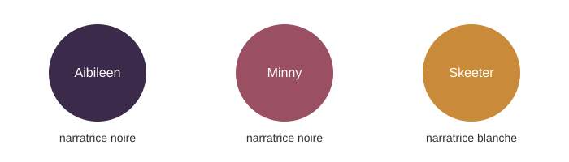

Personnages
Trois voix narratives

| Personnage | Rôle | Pistes d’analyse |
|---|---|---|
| Aibileen Clark | Domestique noire, élève les enfants de ses employeurs | Maternage, deuil, prise de parole |
| Minny Jackson | Domestique noire, franc-parler | Résistance, humour, violence domestique |
| Eugenia « Skeeter » Phelan | Jeune femme blanche, aspirante écrivaine | Position de la narratrice blanche, « sauveur blanc » |
| Hilly Holbrook | Antagoniste, figure de la ségrégation | Pouvoir social, racisme |